| Примеры работы с одномерными массивами. | ||
| Назад | ||
|
Необходимо задать вещественный массив размерностью 6 (т.е.
из шести элементов); заполнить массив вводимыми значениями и
вывести элементы на экран. Использовать два цикла: первый — для
ввода элементов, второй — для вывода. Пример результата: введите элемент массива: 3.0 введите элемент массива: 0.8 введите элемент массива: 0.56 введите элемент массива: 4.3 введите элемент массива: 23.8 введите элемент массива: 0.7 Массив = 3, 0.8, 0.56, 4.3, 23.8, 0.7
Дан ряд из 10 произвольных чисел: Пример результата: Массив = 2 0 4 29 3 11 26 11 9 4 mas[1] + mas[2] + mas[3] = 6 mas[2] + mas[3] + mas[4] = 33 mas[3] + mas[4] + mas[5] = 36 mas[4] + mas[5] + mas[6] = 43 mas[5] + mas[6] + mas[7] = 40 mas[6] + mas[7] + mas[8] = 48 mas[7] + mas[8] + mas[9] = 46 mas[8] + mas[9] + mas[10] = 24
Написать программу решения задачи о печати ряда чисел МАКСИМАЛЬНЫЙ (МИНИМАЛЬНЫЙ) ЭЛЕМЕНТ МАССИВАПсевдокод: 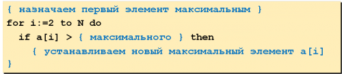 Поиск максимального элемента по его индексу: 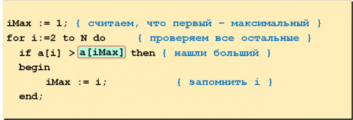 ЦИКЛИЧЕСКИЙ СДВИГ
Пример: сдвинуть
элементы массива влево на 1 позицию, первый элемент становится
на место последнего. 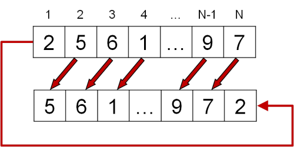 Решение:
Алгоритм:
A[1]:=A[2]; A[2]:=A[3];… A[N-1]:=A[N]; Программа: 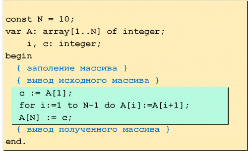 ПЕРЕСТАНОВКА ЭЛЕМЕНТОВ В МАССИВЕРассмотрим, как происходит перестановка или реверс массива.
Пример: переставить
элементы массива в обратном порядке
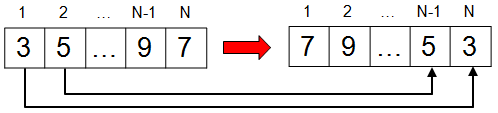 Решение:
Алгоритм:
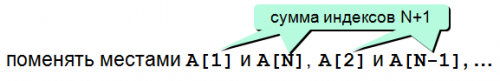 Псевдокод: 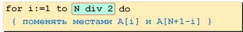 Программа: 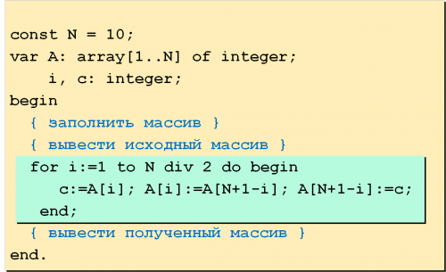 ВЫБОР ЭЛЕМЕНТОВ И СОХРАНЕНИЕ В ДРУГОЙ МАССИВ
Пример: найти в массиве
элементы, удовлетворяющие некоторому условию
(например, отрицательные), и скопировать их в
другой массив
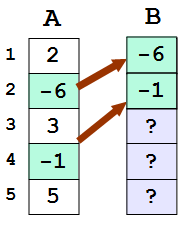 Решение:
Решение: подсчитывать
количество найденных элементов с помощью
счетчика count, очередной элемент устанавливать
на место B[count]. Переменой count необходимо
присвоить 1.
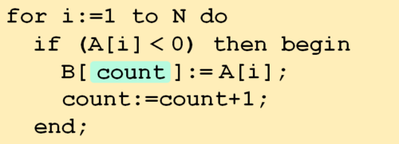 Вывод массива B:
writeln('Выбранные элементы');
for i:=1 to count-1 do
write(B[i], ' ')
СОРТИРОВКА ЭЛЕМЕНТОВ МАССИВА
Сортировка методом «Пузырька»
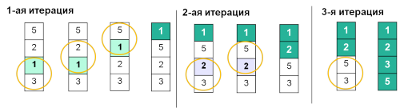
for i:=1 to N-1 do begin
for j:=N-1 downto i do
if A[j] > A[j+1] then begin
с := A[j];
A[j] := A[j+1];
A[j+1] := с;
end;
end;
Сортировка методом выбора
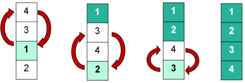 for i := 1 to N-1 do begin
min:= i ;
for j:= i+1 to N do
if A[j] < A[min] then min:=j;
if min <> i then begin
c:=A[i];
A[i]:=A[min];
A[min]:=c;
end;
end;
Быстрая сортировка или quick sort
Алгоритм:
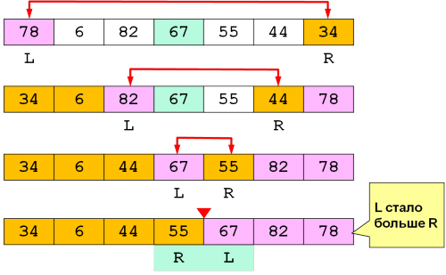 Выполнение на Паскале: 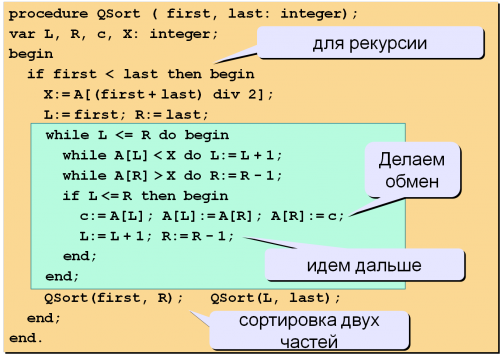 procedure QSort ( first, last: integer);
var L, R, c, X: integer;
begin
if first < last then begin
X:= A[(first + last) div 2];
L:= first; R:= last;
while L <= R do begin
while A[L] < X do L:= L + 1;
while A[R] > X do R:= R - 1;
if L <= R then begin
c:= A[L]; A[L]:= A[R]; A[R]:= c;
L:= L + 1; R:= R - 1;
end;
end;
QSort(first, R); QSort(L, last);
end;
end.
|
||
| Конспект подготовлен Бакулиным А. М. 2022 год. | ||